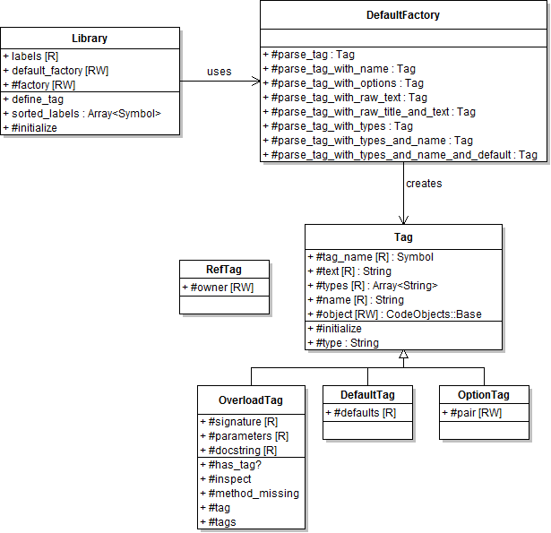

Tags Architecture
Programmatic API
Accessing Tag Information
Tag metadata is added when a YARD::Docstring is added to a code object
using the YARD::CodeObjects::Base#docstring= attribute. In addition to adding
conventional comments, tags are parsed and associated with the object. The easiest
way to access tags on an object is to use the YARD::CodeObjects::Base#tag and #tags
methods, for example:
# Using the Foo class object from above
obj.(:tagname).first.text #=> "some data"
Because multiple tags can be stored with the same name, they are stored as a list
of tags. The #tag method is an alias for the first item in the list of tags.
Also note that the #tag, #tags and #has_tag? methods are all convenience
methods that delegate to the YARD::Docstring object described above.
Adding Custom Tags
The @tagname tag used in the above examples is clearly not part of the tags
that come with YARD. If such a tag would actually be part of documentation under
a default install, YARD would raise a warning that the tag does not exist. It is,
however, trivial to add this tag to be recognized by YARD.
All tags in YARD are added to the tag library which makes
use of a tag factory class to parse the data inside the tags. To simply add a
tag that stores simple text like our @tagname tag above, use:
YARD::Tags::Library.define_tag("A Sample Tag", :tagname)
This will now allow YARD to add the metadata from @tagname to the docstring.
Tag Factory Architecture
Recognizing a tag is one part of the process. Parsing the tag contents is the second step. YARD has a tag architecture that allows developers to add or completely change the way tags contents can be parsed.
The separation of registration and tag creation can be seen in the following class diagram:

DefaultFactory
By default, YARD has a few standard syntaxes that can be parsed for tags. These are all implemented by the YARD::Tags::DefaultFactory class. These syntaxes are:
Standard text: no parsing is done, but text is stripped of newlines and multiple spaces.
Raw text: does no parsing at all, no stripping of newlines or spaces. This is best used for code snippets.
Raw text with title: does no parsing on the text but extracts the first line of the metadata as the "title", useful for tags such as
@example:# @example Inspect an element # myobj.inspect #=> #<Object:0x123525>Text with types: parses a list of types at the beginning of the text. Types are optional. The standard syntax is in the form
[type1, type2, ...], for example:# @return [String, Symbol] a description here # @return description here with no typesText with types and a name: parses a list of types at the beginning of text followed by a name and extra descriptive text. For example:
# @param [String] str the string to reverse def reverse(str) '...' end
As mentioned above, this syntax is implemented by the DefaultFactory which can
be swapped out for any factory. In some cases, a developer may want to change
the type declaration syntax to be in the form:
# @tagname name <Types, here> description
This can be done by simply implementing a new factory that parses the data in this form.
Implementing a Factory
Factories should implement the method parse_tag as well as any parse_tag_SUFFIX
method where SUFFIX refers to the suffix added when declaring the tag. For example,
a tag can also be declared as follows:
YARD::Tags::Library.define_tag "Parameter", :param, :with_types
In such a case, the factory will be called with method parse_tag_with_types. In
all cases, the method should return a new YARD::Tags::Tag object. Generally,
the parse_tag methods take 2 or 3 parameters. A simple tag can be implemented
as:
def parse_tag(tag_name, text)
Tag.new(tag_name, text)
end
The text parameter contains pre-parsed text with extra spaces and newlines removed. If required, the method could also be declared with a third parameter containing unmodified raw text:
def parse_tag_with_raw_text(tag_name, text, raw_text)
Tag.new(tag_name, raw_text)
end
Note that this method would be invoked for a tag declared with the :with_raw_text
suffix.
Changing the Factory
To change the factory, set the YARD::Tags::Library.default_factory attribute:
YARD::Tags::Library.default_factory = MyFactory
This must be done before any parsing is done, or the factory will not be used.